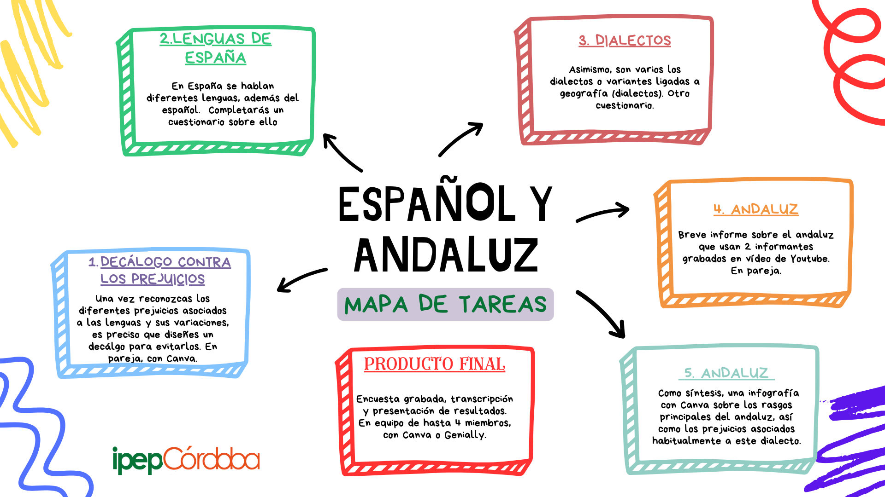
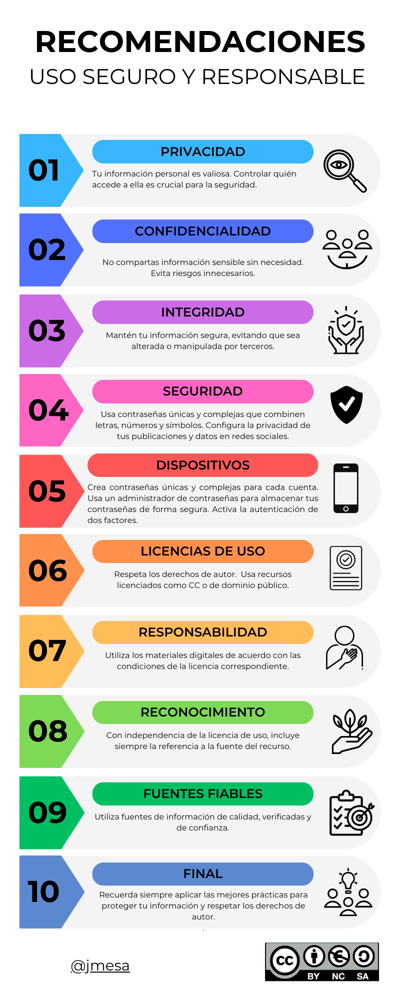

Dialectos del español y andaluz
Guía didáctica
Notas de prensa
Noticias en la prensa sobre los asuntos de los que tratamos en este REA:
- Una nueva lengua indoeuropea.
-
El Observatorio sobre las Hablas Andaluzas acaba de nacer.
-
Vivir entre dos lenguas: un estudio matemático desvela cómo las creencias sobre un idioma determinan su futuro. Sobre las actitudes de los hablantes en comunidades bilingües en relación a la lengua menos prestigiosa.
-
La UGR coordina el estudio más completo hasta la fecha sobre el acento andaluz, con un proyecto que analizará la manera de hablar en 500 municipios andaluces. La Universidad de Granada informa sobre un proyecto para renovar nuestro conocimiento sobre el andaluz, con encuesta en 500 municipios andaluces.
- Atlas Lingüístico Interactivo de los Acentos de Andalucía. La página web del proyecto de que se informa en la noticia anterior.
-
Acento andaluz. Es un artículo de opinión escrito por Ignacio Martínez. En el artículo se subraya el interés publicitario por el dialecto andaluz, lo que redunda en un mayor prestigio.
-
Ejercicios y encuesta del Atlas Lingüístico Interactivo de los Acentos de Andalucía. Un fichero con las preguntas de la encuesta y ejercicios sobre ella.
-
Encuesta automatizada para el Atlas Lingüístico Interactivo.
Tareas de la SdA
Son varias las tareas preparatorias o posibilitadoras que vamos a realizar para que podáis realizar un informe final lingüístico a partir de las encuestas realizadas a hablantes. Con ese fin, os facilito un mapa de las tareas de esta situación de aprendizaje:

Criterios, tiempos y herramientas
Lista de cotejo
Completa la lista de cotejo marcando las casillas al realizar las actividades correspondientes.
%E9%B0%E6%EB%E2%F7%D5%F3%FF%F7%B0%A8%B0%D1%FD%E6%F7%F8%FD%B0%BE%B0%FB%F6%B0%A8%B0%A0%A2%A0%A6%A3%A2%A0%A2%A3%AB%A1%AB%A1%A5%BF%A3%A0%A2%B0%BE%B0%E6%FB%E6%FE%F7%B0%A8%B0%DB%FC%F4%FD%F5%E0%F3%F4%7F%F3%B2%E1%FD%F0%E0%F7%B2%F7%FE%B2%F3%FC%F6%F3%FE%E7%E8%B0%BE%B0%E1%E7%F0%E6%FB%E6%FE%F7%B0%A8%B0%DE%FB%E1%E6%F3%B2%F6%F7%B2%F1%FD%FC%E6%E0%FD%FE%B0%BE%B0%FE%F7%E4%F7%FE%E1%B0%A8%C9%E9%B0%E6%EB%E2%F7%B0%A8%B0%A1%B0%BE%B0%FC%FB%E4%F7%FE%B0%A8%B0%A2%B0%BE%B0%FB%E6%F7%FF%B0%A8%B0%AE%E1%E2%F3%FC%B2%E1%E6%EB%FE%F7%AF%CE%B0%F4%FD%FC%E6%BF%E1%FB%E8%F7%A8%B2%A3%AA%E2%E6%A9%B2%F1%FD%FE%FD%E0%A8%B2%B1%A2%A2%AA%A2%A2%A2%A9%CE%B0%AC%AE%E1%E6%E0%FD%FC%F5%AC%A3%BC%A3%BC%B2%D1%FD%FC%FD%F1%F7%B2%FE%F3%B2%E4%F3%E0%FB%F7%F6%F3%F6%B2%F6%FB%F3%FE%F7%F1%E6%F3%FE%B2%F3%FC%F6%F3%FE%E7%E8%F3%AE%BD%E1%E6%E0%FD%FC%F5%AC%AE%BD%E1%E2%F3%FC%AC%B0%BE%B0%E2%FD%FB%FC%E6%E1%B0%A8%B0%B0%EF%BE%E9%B0%E6%EB%E2%F7%B0%A8%B0%A2%B0%BE%B0%FC%FB%E4%F7%FE%B0%A8%B0%A3%B0%BE%B0%FB%E6%F7%FF%B0%A8%B0%AE%E1%E2%F3%FC%B2%E1%E6%EB%FE%F7%AF%CE%B0%F1%FD%FE%FD%E0%A8%B2%E0%F5%F0%BA%A4%A2%BE%B2%A4%A6%BE%B2%A4%A5%BB%A9%B2%F4%FD%FC%E6%BF%F4%F3%FF%FB%FE%EB%A8%B2%C0%FD%F0%FD%E6%FD%BE%B2%D3%E0%FB%F3%FE%BE%B2%E1%F3%FC%E1%BF%E1%F7%E0%FB%F4%A9%B2%F4%FD%FC%E6%BF%E1%FB%E8%F7%A8%B2%A3%A6%E2%EA%A9%B2%FE%F7%E6%E6%F7%E0%BF%E1%E2%F3%F1%FB%FC%F5%A8%B2%A2%BC%A0%E2%EA%A9%B2%F0%F3%F1%F9%F5%E0%FD%E7%FC%F6%BF%F1%FD%FE%FD%E0%A8%B2%E0%F5%F0%BA%A0%A7%A7%BE%B2%A0%A7%A7%BE%B2%A0%A7%A7%BB%A9%CE%B0%AC%D3%E2%F3%E0%F7%F1%F7%FC%B2%FE%FD%E1%B2%F6%FB%F4%F7%E0%F7%FC%E6%F7%E1%B2%E0%F3%E1%F5%FD%E1%B2%F3%FC%F6%F3%FE%E7%F1%F7%E1%B2%EB%B2%E1%E7%B2%E0%F7%FE%F3%F1%FBa%FC%B2%F1%FD%FC%B2%FE%FD%E1%B2%F6%FB%F3%FE%F7%F1%E6%FD%E1%B2%FF%F7%E0%FB%F6%FB%FD%FC%F3%FE%F7%E1%BC%B4%FC%F0%E1%E2%A9%AE%BD%E1%E2%F3%FC%AC%B0%BE%B0%E2%FD%FB%FC%E6%E1%B0%A8%B0%A7%B0%EF%BE%E9%B0%E6%EB%E2%F7%B0%A8%B0%A2%B0%BE%B0%FC%FB%E4%F7%FE%B0%A8%B0%A3%B0%BE%B0%FB%E6%F7%FF%B0%A8%B0%AE%E1%E2%F3%FC%B2%E1%E6%EB%FE%F7%AF%CE%B0%F1%FD%FE%FD%E0%A8%B2%E0%F5%F0%BA%A4%A2%BE%B2%A4%A6%BE%B2%A4%A5%BB%A9%B2%F4%FD%FC%E6%BF%F4%F3%FF%FB%FE%EB%A8%B2%C0%FD%F0%FD%E6%FD%BE%B2%D3%E0%FB%F3%FE%BE%B2%E1%F3%FC%E1%BF%E1%F7%E0%FB%F4%A9%B2%F4%FD%FC%E6%BF%E1%FB%E8%F7%A8%B2%A3%A6%E2%EA%A9%B2%FE%F7%E6%E6%F7%E0%BF%E1%E2%F3%F1%FB%FC%F5%A8%B2%A2%BC%A0%E2%EA%A9%CE%B0%AC%C1%F7%B2%F6%FB%F4%F7%E0%F7%FC%F1%FB%F3%FC%B2%FE%FD%E1%B2%E0%F3%E1%F5%FD%E1%B2%F6%F7%B2%D3%FC%F6%F3%FE%E7%F1%7F%F3%B2%DD%E0%FB%F7%FC%E6%F3%FE%B2%EB%B2%D3%FC%F6%F3%FE%E7%F1%7F%F3%B2%DD%F1%F1%FB%F6%F7%FC%E6%F3%FE%BC%AE%BD%E1%E2%F3%FC%AC%B0%BE%B0%E2%FD%FB%FC%E6%E1%B0%A8%B0%A7%B0%EF%BE%E9%B0%E6%EB%E2%F7%B0%A8%B0%A1%B0%BE%B0%FC%FB%E4%F7%FE%B0%A8%B0%A2%B0%BE%B0%FB%E6%F7%FF%B0%A8%B0%AE%E1%E6%E0%FD%FC%F5%B2%E1%E6%EB%FE%F7%AF%CE%B0%F1%FD%FE%FD%E0%A8%B2%E0%F5%F0%BA%A2%BE%B2%A3%A0%AA%BE%B2%A2%BB%A9%B2%F4%FD%FC%E6%BF%E1%FB%E8%F7%A8%B2%A0%A6%E2%EA%A9%B2%F0%F3%F1%F9%F5%E0%FD%E7%FC%F6%BF%F1%FD%FE%FD%E0%A8%B2%E0%F5%F0%BA%A0%A7%A7%BE%B2%A0%A7%A7%BE%B2%A0%A7%A7%BB%A9%CE%B0%AC%A3%BC%A0%BC%B2%DB%F6%F7%FC%E6%FB%F4%FB%F1%F3%B2%EB%B2%E1%F7%B2%F1%E7%F7%E1%E6%FB%FD%FC%F3%B2%FE%FD%E1%B2%E2%E0%F7%F8%E7%FB%F1%FB%FD%E1%B2%FE%FB%FC%F5n%7F%E1%E6%FB%F1%FD%E1%AE%BD%E1%E6%E0%FD%FC%F5%AC%B0%BE%B0%E2%FD%FB%FC%E6%E1%B0%A8%B0%B0%EF%BE%E9%B0%E6%EB%E2%F7%B0%A8%B0%A2%B0%BE%B0%FC%FB%E4%F7%FE%B0%A8%B0%A3%B0%BE%B0%FB%E6%F7%FF%B0%A8%B0%AE%E1%E2%F3%FC%B2%E1%E6%EB%FE%F7%AF%CE%B0%F1%FD%FE%FD%E0%A8%B2%E0%F5%F0%BA%A4%A2%BE%B2%A4%A6%BE%B2%A4%A5%BB%A9%B2%F4%FD%FC%E6%BF%F4%F3%FF%FB%FE%EB%A8%B2%C0%FD%F0%FD%E6%FD%BE%B2%D3%E0%FB%F3%FE%BE%B2%E1%F3%FC%E1%BF%E1%F7%E0%FB%F4%A9%B2%F4%FD%FC%E6%BF%E1%FB%E8%F7%A8%B2%A3%A6%E2%EA%A9%B2%FE%F7%E6%E6%F7%E0%BF%E1%E2%F3%F1%FB%FC%F5%A8%B2%A2%BC%A0%E2%EA%A9%CE%B0%AC%DB%F6%F7%FC%E6%FB%F4%FB%F1%F3%B2%FE%FD%E1%B2%F6%FB%F4%F7%E0%F7%FC%E6%F7%E1%B2%E2%E0%F7%F8%E7%FB%F1%FB%FD%E1%B2%FE%FB%FC%F5n%7F%E1%E6%FB%F1%FD%E1%B2%E1%FD%F0%E0%F7%B2%F7%FE%B2%F3%FC%F6%F3%FE%E7%E8%AE%BD%E1%E2%F3%FC%AC%B0%BE%B0%E2%FD%FB%FC%E6%E1%B0%A8%B0%A3%A2%B0%EF%BE%E9%B0%E6%EB%E2%F7%B0%A8%B0%A1%B0%BE%B0%FC%FB%E4%F7%FE%B0%A8%B0%A2%B0%BE%B0%FB%E6%F7%FF%B0%A8%B0%AE%E1%E6%E0%FD%FC%F5%B2%E1%E6%EB%FE%F7%AF%CE%B0%F1%FD%FE%FD%E0%A8%B2%E0%F5%F0%BA%A2%BE%B2%A3%A0%AA%BE%B2%A2%BB%A9%B2%F4%FD%FC%E6%BF%E1%FB%E8%F7%A8%B2%A0%A6%E2%EA%A9%B2%F0%F3%F1%F9%F5%E0%FD%E7%FC%F6%BF%F1%FD%FE%FD%E0%A8%B2%E0%F5%F0%BA%A0%A7%A7%BE%B2%A0%A7%A7%BE%B2%A0%A7%A7%BB%A9%CE%B0%AC%A7%BC%A0%BC%B2%D7%FC%E0%FB%E3%E7%F7%F1%F7%B2%E6%F7%EA%E6%FD%E1%B2%FF%E7%FE%E6%FB%FF%FD%F6%F3%FE%F7%E1%AE%BD%E1%E6%E0%FD%FC%F5%AC%B0%BE%B0%E2%FD%FB%FC%E6%E1%B0%A8%B0%B0%EF%BE%E9%B0%E6%EB%E2%F7%B0%A8%B0%A2%B0%BE%B0%FC%FB%E4%F7%FE%B0%A8%B0%A3%B0%BE%B0%FB%E6%F7%FF%B0%A8%B0%AE%E1%E2%F3%FC%B2%E1%E6%EB%FE%F7%AF%CE%B0%F1%FD%FE%FD%E0%A8%B2%E0%F5%F0%BA%A4%A2%BE%B2%A4%A6%BE%B2%A4%A5%BB%A9%B2%F4%FD%FC%E6%BF%F4%F3%FF%FB%FE%EB%A8%B2%C0%FD%F0%FD%E6%FD%BE%B2%D3%E0%FB%F3%FE%BE%B2%E1%F3%FC%E1%BF%E1%F7%E0%FB%F4%A9%B2%F4%FD%FC%E6%BF%E1%FB%E8%F7%A8%B2%A3%A6%E2%EA%A9%B2%FE%F7%E6%E6%F7%E0%BF%E1%E2%F3%F1%FB%FC%F5%A8%B2%A2%BC%A0%E2%EA%A9%CE%B0%AC%DE%F3%B2%E0%F7%F6%F3%F1%F1%FBa%FC%B2%F6%F7%B2%FE%F3%B2%FB%FC%F4%FD%F5%E0%F3%F4%7F%F3%B2%F7%E1%B2%F1%FD%E0%E0%F7%F1%E6%F3%BC%B4%FC%F0%E1%E2%A9%AE%BD%E1%E2%F3%FC%AC%B0%BE%B0%E2%FD%FB%FC%E6%E1%B0%A8%B0%A7%B0%EF%BE%E9%B0%E6%EB%E2%F7%B0%A8%B0%A2%B0%BE%B0%FC%FB%E4%F7%FE%B0%A8%B0%A3%B0%BE%B0%FB%E6%F7%FF%B0%A8%B0%AE%E1%E2%F3%FC%B2%E1%E6%EB%FE%F7%AF%CE%B0%F1%FD%FE%FD%E0%A8%B2%E0%F5%F0%BA%A4%A2%BE%B2%A4%A6%BE%B2%A4%A5%BB%A9%B2%F4%FD%FC%E6%BF%F4%F3%FF%FB%FE%EB%A8%B2%C0%FD%F0%FD%E6%FD%BE%B2%D3%E0%FB%F3%FE%BE%B2%E1%F3%FC%E1%BF%E1%F7%E0%FB%F4%A9%B2%F4%FD%FC%E6%BF%E1%FB%E8%F7%A8%B2%A3%A6%E2%EA%A9%B2%FE%F7%E6%E6%F7%E0%BF%E1%E2%F3%F1%FB%FC%F5%A8%B2%A2%BC%A0%E2%EA%A9%CE%B0%AC%DE%F3%B2%F1%FD%FA%F7%E1%FBa%FC%B2%EB%B2%F3%E0%E6%FB%F1%E7%FE%F3%F1%FBa%FC%B2%F6%F7%B2%FE%F3%B2%FB%FC%F4%FD%F5%E0%F3%F4%7F%F3%B2%BA%E6%F7%EA%E6%FD%E1%B2%F7%B2%FB%FFs%F5%F7%FC%F7%E1%BB%B2%F7%E1%B2%F3%E6%E0%F3%F1%E6%FB%E4%F3%BC%AE%BD%E1%E2%F3%FC%AC%B0%BE%B0%E2%FD%FB%FC%E6%E1%B0%A8%B0%A7%B0%EF%BE%E9%B0%E6%EB%E2%F7%B0%A8%B0%A1%B0%BE%B0%FC%FB%E4%F7%FE%B0%A8%B0%A2%B0%BE%B0%FB%E6%F7%FF%B0%A8%B0%AE%E1%E6%E0%FD%FC%F5%B2%E1%E6%EB%FE%F7%AF%CE%B0%F1%FD%FE%FD%E0%A8%B2%E0%F5%F0%BA%A2%BE%B2%A3%A0%AA%BE%B2%A2%BB%A9%B2%F4%FD%FC%E6%BF%E1%FB%E8%F7%A8%B2%A0%A6%E2%EA%A9%CE%B0%AC%A4%BC%A3%BC%B2%C0%F7%F3%FE%FB%E8%F3%B2%E2%F7%E3%E7%F7c%FD%E1%B2%E6%E0%F3%F0%F3%F8%FD%E1%B2%F6%F7%B2%FB%FC%E4%F7%E1%E6%FB%F5%F3%F1%FBa%FC%AE%BD%E1%E6%E0%FD%FC%F5%AC%B0%BE%B0%E2%FD%FB%FC%E6%E1%B0%A8%B0%B0%EF%BE%E9%B0%E6%EB%E2%F7%B0%A8%B0%A2%B0%BE%B0%FC%FB%E4%F7%FE%B0%A8%B0%A3%B0%BE%B0%FB%E6%F7%FF%B0%A8%B0%AE%E1%E2%F3%FC%B2%E1%E6%EB%FE%F7%AF%CE%B0%F1%FD%FE%FD%E0%A8%B2%E0%F5%F0%BA%A4%A2%BE%B2%A4%A6%BE%B2%A4%A5%BB%A9%B2%F4%FD%FC%E6%BF%F4%F3%FF%FB%FE%EB%A8%B2%C0%FD%F0%FD%E6%FD%BE%B2%D3%E0%FB%F3%FE%BE%B2%E1%F3%FC%E1%BF%E1%F7%E0%FB%F4%A9%B2%F4%FD%FC%E6%BF%E1%FB%E8%F7%A8%B2%A3%A6%E2%EA%A9%B2%FE%F7%E6%E6%F7%E0%BF%E1%E2%F3%F1%FB%FC%F5%A8%B2%A2%BC%A0%E2%EA%A9%CE%B0%AC%DE%FD%E1%B2%F1%FD%FC%E6%F7%FC%FB%F6%FD%E1%B2%F6%F7%B2%FE%F3%B2%FB%FC%F4%FD%F5%E0%F3%F4%7F%F3%B2%E1%FD%FC%B2%F1%FD%FF%E2%FE%F7%E6%FD%E1%BC%AE%BD%E1%E2%F3%FC%AC%B0%BE%B0%E2%FD%FB%FC%E6%E1%B0%A8%B0%A7%B0%EF%BE%E9%B0%E6%EB%E2%F7%B0%A8%B0%A2%B0%BE%B0%FC%FB%E4%F7%FE%B0%A8%B0%A3%B0%BE%B0%FB%E6%F7%FF%B0%A8%B0%AE%E1%E2%F3%FC%B2%E1%E6%EB%FE%F7%AF%CE%B0%F1%FD%FE%FD%E0%A8%B2%E0%F5%F0%BA%A4%A2%BE%B2%A4%A6%BE%B2%A4%A5%BB%A9%B2%F4%FD%FC%E6%BF%F4%F3%FF%FB%FE%EB%A8%B2%C0%FD%F0%FD%E6%FD%BE%B2%D3%E0%FB%F3%FE%BE%B2%E1%F3%FC%E1%BF%E1%F7%E0%FB%F4%A9%B2%F4%FD%FC%E6%BF%E1%FB%E8%F7%A8%B2%A3%A6%E2%EA%A9%B2%FE%F7%E6%E6%F7%E0%BF%E1%E2%F3%F1%FB%FC%F5%A8%B2%A2%BC%A0%E2%EA%A9%CE%B0%AC%D1%FB%E6%F3%BE%B2%F3%B2%E2%FB%F7%B2%F6%F7%B2%E2s%F5%FB%FC%F3%BE%B2%FE%F3%E1%B2%F4%E7%F7%FC%E6%F7%E1%B2%E7%E1%F3%F6%F3%E1%B2%E2%F3%E0%F3%B2%FE%F3%B2%E0%F7%F6%F3%F1%F1%FBa%FC%B2%F6%F7%FE%B2%E6%E0%F3%F0%F3%F8%FD%AE%BD%E1%E2%F3%FC%AC%B0%BE%B0%E2%FD%FB%FC%E6%E1%B0%A8%B0%A7%B0%EF%CF%BE%B0%FA%F3%E1%DE%FD%F5%FD%B0%A8%F4%F3%FE%E1%F7%BE%B0%E7%E0%FE%DE%FD%F5%FD%B0%A8%B0%B0%BE%B0%FA%F3%E1%D1%FD%FF%FF%E7%FC%FB%E6%EB%B0%A8%E6%E0%E7%F7%BE%B0%E7%E0%FE%D1%FD%FF%FF%E7%FC%FB%E6%EB%B0%A8%B0%E0%F7%E1%FD%E7%E0%F1%F7%E1%BD%DE%FD%F5%FD%DB%C2%D7%C2%CD%F0%F3%F8%F3%CD%E0%F7%E1%FD%FE%E7%F1%FB%FD%FC%BC%E2%FC%F5%B0%BE%B0%FA%F3%E1%D6%F7%F1%FD%E0%F3%E6%FB%E4%F7%B0%A8%F4%F3%FE%E1%F7%BE%B0%E7%E0%FE%D6%F7%F1%FD%E0%F3%E6%FB%E4%F7%B0%A8%B0%B0%BE%B0%E1%F3%E4%F7%D6%F3%E6%F3%B0%A8%E6%E0%E7%F7%BE%B0%E7%E1%F7%E0%D6%F3%E6%F3%B0%A8%E6%E0%E7%F7%BE%B0%F4%FD%FD%E6%F7%E0%B0%A8%B0%D7%E1%E6%F3%B2%AE%F3%B2%FA%E0%F7%F4%AF%FA%E6%E6%E2%E1%A8%BD%BD%F7%E1%BC%E5%FB%F9%FB%E2%F7%F6%FB%F3%BC%FD%E0%F5%BD%E5%FB%F9%FB%BD%DE%FB%E1%E6%F3%CD%F6%F7%CD%F1%FD%FF%E2%E0%FD%F0%F3%F1%FB%B7%D1%A1%B7%D0%A1%FC%AC%FE%FB%E1%E6%F3%B2%F6%F7%B2%F1%FD%E6%F7%F8%FD%AE%BD%F3%AC%B2%E1%F7%B2%F7%FC%F1%E7%F7%FC%E6%E0%F3%B2%F0%F3%F8%FD%B2%E7%FC%F3%B2%FE%FB%F1%F7%FC%F1%FB%F3%AE%BD%F0%E0%AC%AE%F3%B2%FA%E0%F7%F4%AF%FA%E6%E6%E2%A8%BD%BD%F1%E0%F7%F3%E6%FB%E4%F7%F1%FD%FF%FF%FD%FC%E1%BC%FD%E0%F5%BD%FE%FB%F1%F7%FC%E1%F7%E1%BD%F0%EB%BF%E1%F3%BD%A6%BC%A2%AC%D1%E0%F7%F3%E6%FB%E4%F7%B2%D1%FD%FF%FF%FD%FC%E1%B2%C0%F7%F1%FD%FC%FD%F1%FB%FF%FB%F7%FC%E6%FD%BF%D1%FD%FF%E2%F3%E0%E6%FB%E0%B2%FB%F5%E7%F3%FE%B2%A6%BC%A2%B2%DB%FC%E6%F7%E0%FC%F3%E6%FB%FD%FC%F3%FE%B2%DE%FB%F1%F7%FC%E1%F7%AE%BD%F3%AC%B0%BE%B0%E7%E1%F7%C1%F1%FD%E0%F7%B0%A8%E6%E0%E7%F7%BE%B0%FF%E1%F5%E1%B0%A8%E9%B0%FF%E1%F5%D1%FD%FF%E2%FE%FB%E6%B0%A8%B0%D3%FE%F1%F3%FC%E8%F3%F6%F3%E1%B0%BE%B0%FF%E1%F5%D6%FD%FC%F7%B0%A8%B0%DA%F7%F1%FA%FD%B0%BE%B0%FF%E1%F5%DB%FC%C2%E0%FD%F5%E0%F7%E1%E1%B0%A8%B0%D7%FC%B2%E2%E0%FD%F1%F7%E1%FD%B0%BE%B0%FF%E1%F5%C7%FC%E0%F7%F3%FE%FB%E8%F7%F6%B0%A8%B0%C1%FB%FC%B2%F1%FD%FF%E2%FE%F7%E6%F3%E0%B0%BE%B0%FF%E1%F5%E6%F3%E1%F9%DC%E7%FF%F0%F7%E0%B0%A8%B0%DCh%FF%F7%E0%FD%B2%F6%F7%B2%E6%F3%E0%F7%F3%E1%B0%BE%B0%FF%E1%F5%DC%F3%FF%F7%B0%A8%B0%DC%FD%FF%F0%E0%F7%B0%BE%B0%FF%E1%F5%D6%F3%E6%F7%B0%A8%B0%D4%F7%F1%FA%F3%B0%BE%B0%FF%E1%F5%C1%F3%E4%F7%B0%A8%B0%D6%F7%E1%F1%F3%E0%F5%F3%E0%B0%BE%B0%FF%E1%F5%DE%FB%E1%E6%B0%A8%B0%FE%FB%E1%E6%F3%CD%F6%F7%CD%F1%FD%E6%F7%F8%FD%B0%BE%B0%FF%E1%F5%C1%F1%FD%E0%F7%B0%A8%B0%C2%E7%FC%E6%E7%F3%F1%FBa%FC%B0%BE%B0%FF%E1%F5%C2%FD%FB%FC%E6%E1%B0%A8%B0%E2%E7%FC%E6%FD%E1%B0%BE%B0%FF%E1%F5%C2%FD%FB%FC%E6%B0%A8%B0%E2%E7%FC%E6%FD%B0%BE%B0%FF%E1%F5%C0%F7%F0%FD%FD%E6%B0%A8%B0%C0%F7%FB%FC%FB%F1%FB%F3%E0%B0%BE%B0%FF%E1%F5%D6%F7%FE%F7%E6%F7%B0%A8%B0-%C1%F7%F5%E7%E0%FD%B2%E3%E7%F7%B2%F6%F7%E1%F7%F3%B2%F0%FD%E0%E0%F3%E0%B2%E6%FD%F6%FD%E1%B2%FE%FD%E1%B2%F1%F3%FF%E2%FD%E1%B2%F6%F7%FE%B2%F4%FD%E0%FF%E7%FE%F3%E0%FB%FD%AD%B0%EF%EF
Navegador incompatible
Rúbrica
| Excelente | Notable | Correcto | Insuficiente | Deficiente | |
|---|---|---|---|---|---|
| 1.1. Reconocimiento lingüístico y sociolingüístico de la variación lingüística | Analiza la muestra de la lengua / dialecto, desde un punto de vista lingüístico y sociolingüístico, de modo completo y coherente. (5) | Analiza la muestra de la lengua / dialecto, desde un punto de vista lingüístico y sociolingüístico, pero omite o yerra en algunos elementos no nucleares. (3,5) | Analiza la muestra de la lengua / dialecto, desde un punto de vista lingüístico y sociolingüístico, pero omite algunos elementos relevantes. Hay, por tanto, elementos que no se han analizado o se han analizado con errores. (2,5) | Apenas analiza la muestra de la lengua / dialecto, o su análisis contiene demasiados errores. (1,5) | No analiza la muestra de la lengua / dialecto, o su análisis contiene demasiados errores. (0) |
| 1.2. Respeta y valora la riqueza cultural, lingüística y dialectal | A partir del análisis, completo y preciso, de la diversidad lingüística en el entorno social próxima, manifiesta su respeto y valoración de la diversidad lingüística/dialectal. (5) | A partir del análisis, algo impreciso y parcial, de la diversidad lingüística en el entorno social próxima, manifiesta su respeto y valoración de la diversidad lingüística/dialectal. (3,5) | A partir del análisis, solo suficiente (omite y/o yerra en varios elementos), de la diversidad lingüística en el entorno social próxima, manifiesta su respeto y valoración de la diversidad lingüística/dialectal. (2,5) | Su análisis es muy incompleto y contiene errores de peso. (1.5) | No analiza o su análisis solo contiene errores. (0) |
| 5.1. El análisis está escrito de modo correcto, coherente y cohesionado. | Escribe con corrección ortográfica, usa un léxico apropiado y cohesiona perfectamente sus textos. (5) | La redacción es correcta, pero la cohesión y/o la corrección gramatical y ortográfica presenta algunos errores. (3,5) | La redacción contiene incorrecciones, ortográficas y/o gramaticales. La cohesión no es evidente. (2,5) | La redacción contiene graves incorrecciones. No hay cohesión. (1.5) | No responde o el texto presenta errores muy graves. (0) |
| 6.1. Elabora un informe a partir de la información seleccionada en relación a la muestra oral analizada. | El contenido de su informe y análisis es muy rico y cita las fuentes usadas para la redacción del informe. (5) | El contenido de su informe y análisis es completo, y cita las fuentes usadas para la redacción del informe. (3,5) | El contenido es incompleto y/o (no) cita las fuentes usadas para la redacción del informe. (2,5) | El contenido es muy incompleto y no cita las fuentes usadas para la redacción del informe. (1.5) | No realiza el informe o bien los contenidos son erróneos y no cita las fuentes. (0) |
- Actividad
- Nombre
- Fecha
- Puntuación
- Notas
- Reiniciar
- Imprimir
- Aplicar
- Ventana nueva
Recomendaciones sobre uso seguro y responsable

Obra publicada con Licencia Creative Commons Reconocimiento Compartir igual 4.0